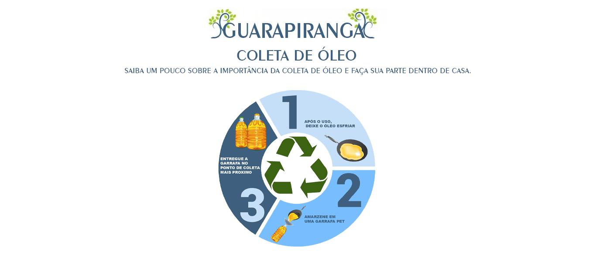
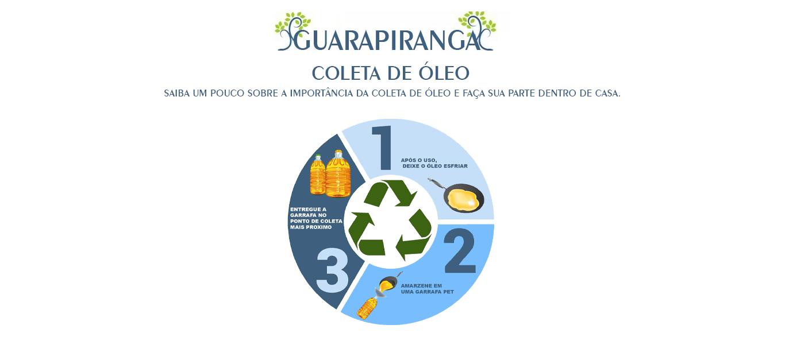

Parque Praia de São Paulo
Localizado as margens da represa Guarapiranga o Parque Praia de São Paulo, ele é mais voltado para pratica de esportes
devido seu tamanho com uma área de 168.700 (Cento e sessenta e oito mil e setecentos) m².
Que tal trazer sua família para conhecer esse parque?
Saiba mais informações clicando aqui.
Parque da Barragem
Parque da Barragem com seus 88.584 (oitenta e oito mil, quinhentos e oitenta e quatro) m² , é uma excelente opção para
conhecer um pouco da fauna brasileira que vive dentro dele , ele apresenta cerca de 25 espécie de aves e duas espécie de
roedores ratão-do-banhado e o preá.
Além da fauna o Parque da Barragem também apresenta um monumento do italiano Otone Zorlini em homenagens aos
Heróis
da Travessia do Atlântico
.
Saiba mais informações clicando aqui.
Parque São José
Parque São José com sua área de 94.987 (noventa e quatro mil, novecentos e oitenta e sete) m², ele participa de dois
projetos muito importantes, o projeto de revitalização da Orla da Represa Guarapiranga e o Programa Operação Defesa das
Águas.
Em sua Fauna ele apresenta uma rica variedade de espécies, uma excelente opção para quem gosta de tirar fotos.
Saiba mais informações clicando aqui.
Parque 9 de Julho
Parque 9 de Julho é o maior parque em volta da represa Guarapiranga com sua área de 537.514 (quinhentos e trinta e sete
mil, quinhentos e catorze) m², o parque é repleto de locais para você aproveitar com sua família e amigos.
Sua falta apresenta cerca de 170 espécies de animais.
Saiba mais informações clicando aqui.